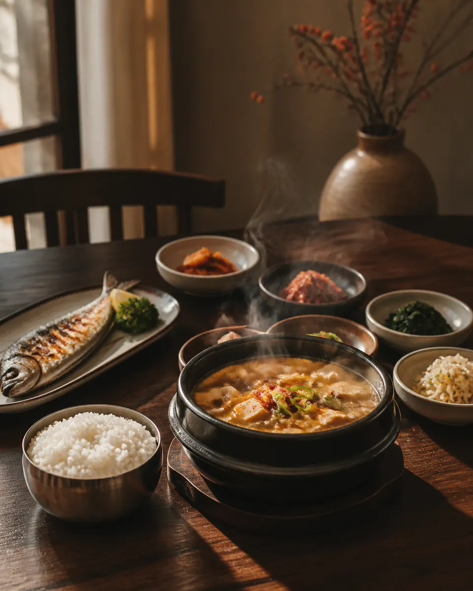

FREE · 3 QUESTIONS · NO SIGN-UP
내 맛집채널은
어떤 장면부터
시작하면 좋을까?
3가지만 고르면 결과와 첫 촬영 체크리스트가 바로 나옵니다. 결과 확인에는 이름이나 연락처가 필요하지 않습니다.
3문항 진단 시작 ↓TYPE 01VISUAL

연출 이미지OPTIONAL · SEPARATE FORM
결과를 저장하고
다음 안내만 받아보세요.
진단 결과는 이미 확인했습니다. 아래 연락처 저장은 선택이며, 맛간다챌린지 모집 신청과 분리된 유형으로 저장됩니다.
DAEGU · ONE DAY
직접 한 편을 완성하고 싶다면.
오전 10시에 시작해 오후 촬영·편집·업로드까지 진행하는 대구 원데이 실습으로 이어집니다. 다음 모집 일정과 참가비는 현재 확정 중입니다.
나도 맛집채널 도전하기 →